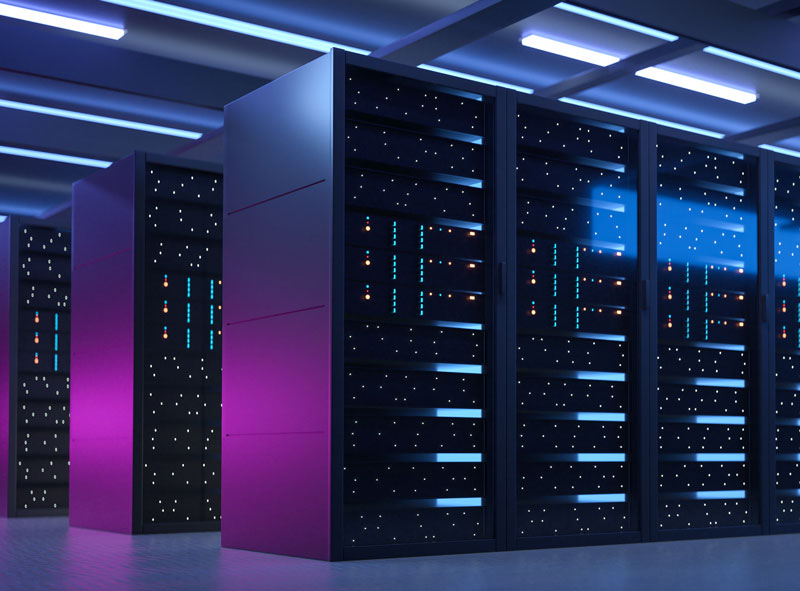
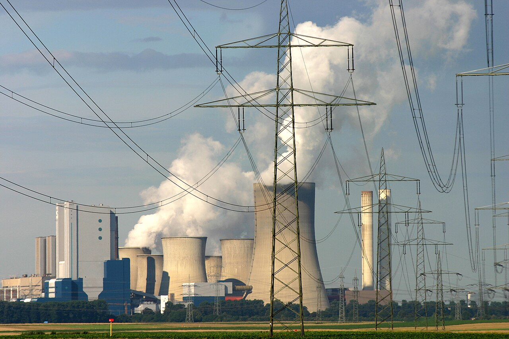

THE PHYSICAL SIDE OF A DIGITAL WORLD
Behind every prompt,
there’s a footprint.
AI may feel invisible. The electricity that runs it, the water that cools it, and the resources behind it are real.
Explore the IEA reportA digital tool. A physical impact.
Follow the connections from servers to our planet.
Powered by more
than a plug.
AI needs electricity. Servers use power to train AI models and to generate responses when people use them. [1]
AI is driving demand. The IEA identifies AI as a major driver of growing data-center electricity use. [1]

Keeping cool
has a cost.
Cooling can consume water. Some data centers use evaporative cooling to remove heat, consuming water as it evaporates. [2]
Efficiency makes a difference. Reducing the heat that cooling systems must remove can reduce both energy use and cooling-tower water use. [2]
Better choices.
Smaller footprint.
Power sources matter. Coal and natural gas used to supply data centers produce carbon dioxide, contributing to climate change. [3]
Cleaner power can help. Low-emission electricity can reduce the emissions associated with operating data centers. [3]
WHAT WE CAN ASK FOR
- Clear energy and water reporting
- More efficient models and cooling
- Cleaner electricity supplies